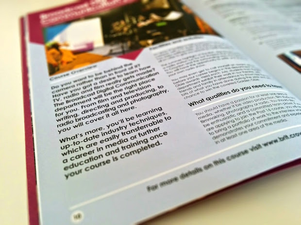
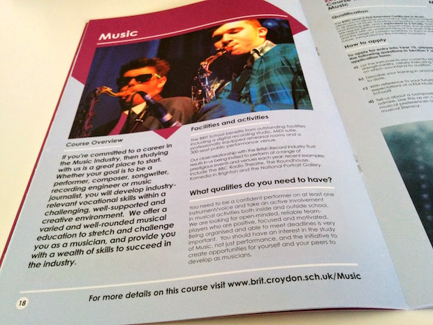
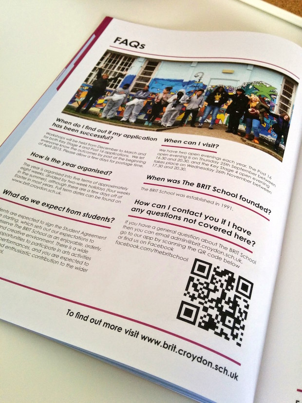
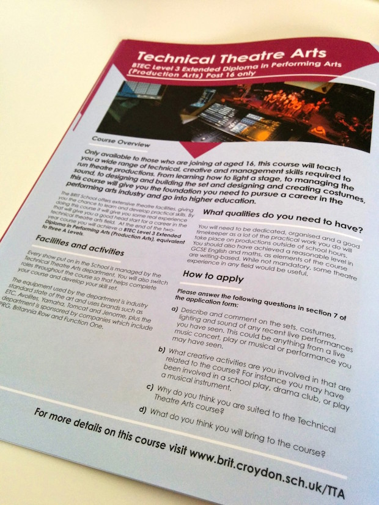
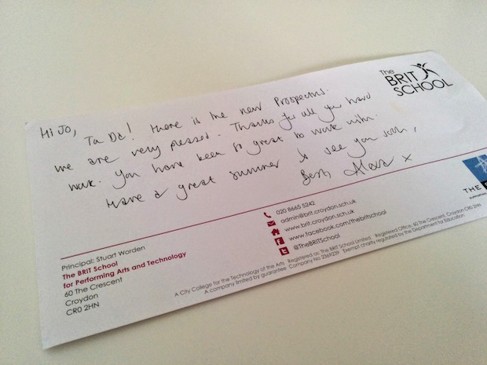

This project has been perhaps the most personal I’ve worked on as I studied at the BRIT School for four years, starting in 2003. So when they approached me about writing the copy for their 2015 prospectus I practically jumped at the chance. I really enjoyed studying at the school and was intrigued to see what had changed, and also was excited to get across my enthusiasm for the school in the copy they wanted me to write.
The brief
The BRIT School is a free performing arts school, a one-of-a-kind in the UK and they felt that their current prospectus wasn’t emphasising how exciting the school is to study at. Previous copy was mainly aimed towards the parents rather than the students, and it was lacking a certain vibrancy that is reflective of the school itself.
They had already written some copy, and had also asked various heads of departments to provide some copy about the courses that they offer. They also had a bright new design in place that I was to work around. I was tasked with creating a clear tone of voice from the copy that was given to me and was advised to write with a style that was engaging, fun and got across the point that the BRIT School is a unique and exciting place to study.
The result
Click on the images for links to the content.




A fresh new outlook for the BRIT School and as seen below, a very happy client!

Hi Jo, Ta da! Here is the new prospectus. We are very pleased. Thanks for all your hard work. You have been so great to work with. Have a great summer and see you soon, Best, Alexa
If you need a freelance copywriter to work on your latest print or brochure project, then drop me a line!.